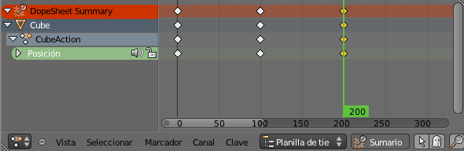

Planilla de tiempos
En el editor Planilla de tiempo  se muestran los dos keyframes en forma de cuadrados amarillos. Nuevamente nos podemos desplazar por la animación moviendo la línea verde vertical.
se muestran los dos keyframes en forma de cuadrados amarillos. Nuevamente nos podemos desplazar por la animación moviendo la línea verde vertical.

Navegación
En realidad la navegación es igual que en editor Vista 3D y que en el Editor UV  pero no está de más echar un vistazo.
pero no está de más echar un vistazo.
- Girar la rueda del ratón. Conseguimos efecto de acercamiento/alejamiento.
- Rueda del ratón pulsada. Desplaza la planilla.
- Tecla "Inicio". Centra la información de la animación para que todo quede a la vista.
- Seleccionar sigue siendo igual, con clic derecho, "Shift" para acumular... Aunque el menú Seleccionar de este editor incluye muchas opciones interesantes.
Una de las ediciones más interesantes es duplicar ("Shift_D") que nos permite ahorrar mucho tiempo en determinadas situaciones. Por ejemplo, supongamos que queremos que el cubo regrese a su lugar de origen (el mismo sitio en el que está en el fotograma 1) y que eso ocurra en el keyframe del fotograma 200.
La solución ideal es seleccionar el primer keyframe...
...lo duplicamos y lo desplazamos ("Shift_D y desplazamos el ratón")...
La franja naranja nos está diciendo que la información del nuevo keyframe es exactamente igual que la del que le precede. Pero si seguimos desplazándolo, y pasamos por encima del que se encuentra en el fotograma 100...
...Blender ya no muestra esa franja anaranjada.
Desplazamos hasta situarlo en el fotograma 200. Si queremos exactitud:
- En el editor Línea de tiempo
 usamos el campo adecuado para determinar el fotograma.
usamos el campo adecuado para determinar el fotograma.
- En el editor Planilla de tiempo
 (con el keyframe seleccionado, lógicamente) hacemos Clave/Adherencia/Fotograma actual.
(con el keyframe seleccionado, lógicamente) hacemos Clave/Adherencia/Fotograma actual.
Este es el resulatdo
Con todo lo anterior ya tenemos una animación de un cubo que va hasta una posición y después regresa a su sitio.
Escalar
Es muy habitual crear los keyframes sin detenerse mucho en que la distancia entre ellos se ajuste a lo que necesitamos, dejando esa edición para más adelante. Sin duda, una vez creados los keyframes no debe resultar muy complicado separarlos o acercarlos para ir determinando la velocidad a la que ocurren las cosas entre uno y otro.
En esa fase del diseño cobra mucha importancia la edición escalar ("S"). Por ejemplo una animación como la anterior que dura 200 fotogramas puede convertirse fácilmente en otra de 100 (disminuyendo el tiempo pero aumentando la velocidad de los acontecimientos).
- Seleccionamos todos los keyframes ("A").
- Colocamos la línea vertical verde en el fotograma 1 si no lo está ya.
- Escalamos ("S") al gusto. Si queremos algo exacto como lo que hemos mencionado usamos la orden "S0.5".
¿Por qué hemos colocado la linea verde vertical en el fotograma 1?